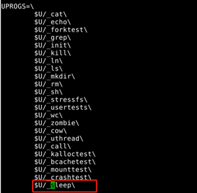
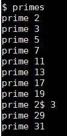
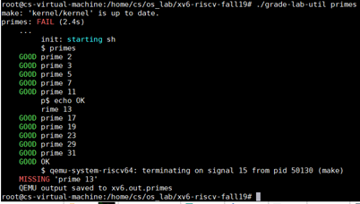
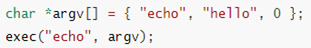

实验步骤¶
下面，我们就正式进入到各实验的细节中，并给出实验实现的一些提示。大家需要依照实验指导书的实验概述中提到的要求进行实现。同时，还需要回答指导书给出的问题。
1. 部署实验环境¶
实验环境主要分为三部分：xv6运行环境、xv6源码、xv6的编译与运行。
1.1 xv6运行环境¶
xv6运行环境详见实验平台及环境配置。
1.2 xv6源码¶
请clone最新代码到本地进行实验：
$ git clone https://gitee.com/hitsz-lab/xv6-labs-2020
每个实验项目都在不同的分支上完成，请 注意切换分支 ，例如，实验一需切换到util分支后进行开发。
$ git branch -a
$ git checkout util

xv6的代码结构：

1.3 编译并运行xv6¶
Step1 在代码总目录xv6-labs-2020下输入“make qemu”， 编译并运行xv6;
Step2 当可以看到“init: starting sh”的字样表示xv6已经正常启动，此时在“$”提示符后可输入xv6支持的shell命令。

qemu退出方法
先按ctrl+a组合键，接着完全松开, 再按x
2. 准备工作¶
本次实验需要编写实验内容中介绍的5个Unix实用程序。初次接触操作系统实验的你可能会感到不知所措，因此不妨先体验一下这些程序的运行效果。实际上，Linux中具备本次实验要实现的一些程序，例如sleep、find、xargs。你可以先尝试在Linux中使用这些命令，充分体会功能后再开始编程。当然，Linux中命令的功能较为复杂，我们仅要求实现简化版。
实验开始之前，我们 强烈建议 你先完成以下工作：
- 熟悉常见命令的使用，如
echo、xargs、find。 - 了解目录的使用。了解
.、..、/分别表示什么，熟悉常见的目录操作命令，如mkdir、cd。 - 了解重定向的使用，重定向即命令中的
<和>，用于修改右侧命令的标准输入/输出。例如echo Hello world > file_a会将字符串Hello world输出至文件file_a，而不是打印在终端。 - 了解管道的使用。管道即命令中的
|，用于将左侧命令的标准输出传递给右侧命令的标准输入。 - 了解常见系统调用的使用。如
fork、exit、wait、open、close、read/write、pipe、dup。
3. 编写用户程序¶
3.1 代码示例¶
sleep程序已经实现，你需要理解其代码并成功将其运行：
Step1. 阅读user/sleep.c文件，理解代码和注释；

Step2. 由于sleep.c为新增的用户程序文件，请如下图修改Makefile文件：

Step3. 编译xv6并运行sleep。

Step4.回答3.3中的相关问题。
3.2 实验提示¶
1) pingpong
a) 使用pipe()创建管道，详见实验原理；
b) 使用fork()创建子进程，注意根据返回值，判断父子进程；
c) 利用read(), write()函数对管道进行读写。
d) 请在user/pingpong.c中实现。
e) 修改Makefile，将程序添加到UPROGS。
2) primes
a) 根据需求利用fork()创建子进程;
b) 利用多个pipe()创建的管道在父子进程间进行数据的传输；
c) dup()可以用来复制文件句柄（管道的写入、读出端）：
例如，将”hello world”写入到标准输入。
fd = dup(1);
write(fd, “hello”, 6);
write(fd, “world\en”, 6); //此时fd!=1，但字符串仍然会写入标准输出
d) 管道read是一直阻塞，直到管道有数据写入；如果绑定在这个管道的写端口关闭了，read返回0。注意及时关闭管道的写端，否则读出端无法判断传输的结束。
e) 要确保子进程先退出，父进程再退出。要不然容易出现如下错误，即$符号先打印出来，但是子进程还在运行状态中。如下图所示。


3) find
a) 可参照user/ls.c的逻辑实现；
b) 使用递归允许find进入到子目录；
c) 不要递归进入.和..；
d) 测试时需要创建新的文件和文件夹，可使用make clean清理文件系统，并使用make qemu再编译运行。
4) xargs
a) xv6中的xargs基本功能演示：
示例1：
$ xargs echo good # 指定要执行的命令：echo，同时输入参数'good'
bye # 换行后继续输入echo的参数'bye'
good bye # 执行"echo good bye"，输出"good bye"
hello too # 换行后输入参数'hello too'
good hello too # 执行"echo good hello too"，输出"good hello too"
# 通过ctrl+D结束输入
$
echo命令用于将接收到的参数作为字符串输出。示例中，每输入一行字符串string，程序就会执行一次echo good string。用户输入ctrl+D的时候，gets等函数返回为空。
需要注意的是，Linux中xargs具备"-n"选项，用于选择每次执行命令需要接收的参数数量，例如：
$ xargs -n2 echo good # 设置选项-n为2，表示接收两个参数（两行输入）；指定要执行的命令：echo，并输入参数'good'
bye # 换行后输入参数'bye'
hello too # 换行后继续输入参数'hello too'，至此接收两个参数
good bye hello too # 执行"echo good bye hello too"，输出"good bye hello too"
# 通过ctrl+D结束输入
$
为了简化实现，我们不要求实现选项"-n"，实现时请 默认该选项为"-n1" ，即 每接收一行就执行一次指定的命令 。
示例2：
$ make qemu
...
$ echo 3 4|xargs echo 1 2
1 2 3 4
$
本示例中，管道左侧echo的输出为"3 4"，通过管道和xargs，它被传递给右侧的echo，即右侧echo实际得到的参数为"1"、"2"、"3"、"4"。最终结果等价于执行命令"echo 1 2 3 4"。实验中你不必考虑管道的实现与使用，你的程序可以直接从标准输入中读取管道传递给你的字符串。
b) 使用fork()和exec()系统对每一行输入调用命令；exec接收的二维参数数组argv，argv[0]必须是该命令本身，最后一个参数argv[size-1]必须为0，否则将执行失败。

c) 使用wait()等待子进程运行完命令；
d) 可以使用kernel/param.h中定义的MAXARG来声明argv的长度；
e) 可使用make clean和make qemu清理文件系统并重新运行。
提示：
1) 关于以上5个Unix实用程序的实现亦可参考MIT官方的实验指导完成实验Lab: Xv6 and Unix utilities
2) 系统调用接口的示例可查阅《xv6 book》chapter 1的内容， 尤其是1.2、1.3节的内容 。
3.3 回答问题¶
一、阅读sleep.c，回答下列问题
1) 当用户在xv6的shell中，输入了命令sleep hello world\n，请问argc的值是多少，argv数组大小是多少。
2) 请描述main函数参数argv中的指针指向了哪些字符串，他们的含义是什么。
3) 哪些代码调用了系统调用为程序sleep提供了服务？
二、了解管道模型，回答下列问题
1) 简要说明你是怎么创建管道的，又是怎么使用管道传输数据的。
2) fork之后，我们怎么用管道在父子进程传输数据？
3) 试解释，为什么要提前关闭管道中不使用的一端？（提示：结合管道的阻塞机制）